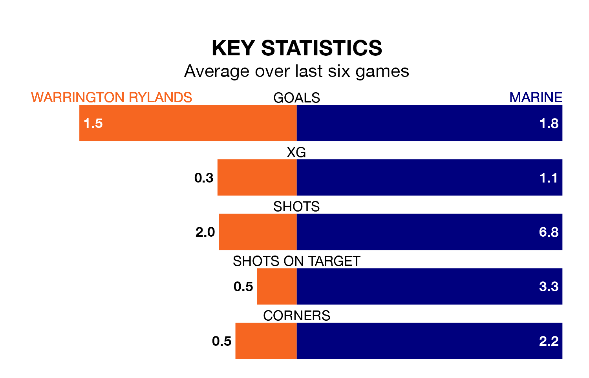

Marine face a challenge to maintain their high-scoring form away against a tight Warrington Rylands defence on Monday.
With 75 goals in 36 games, Marine are the second-highest scorers in the Northern Premier League ahead of the 3pm kick-off.
They face a Warrington Rylands side who have scored 55 in 34 matches, but conceded only 37 goals, putting them joint-top of the league's tightest defences.
Marine are third in the table after 36 games, of which they have won 19 and drawn eight, earning 65 points.
Warrington Rylands are two places behind the away team in fifth, with 17 wins and 12 draws putting them on 63 points.
The hosts are in good form in the Northern Premier League, with four wins and a draw from their last six games.
With four wins and two losses over that period, Marine's form is slightly worse – they have taken 12 points from 18, compared to Warrington Rylands's 13.
In the last five years, Warrington Rylands and Marine have played each other on five occasions. Warrington Rylands won three of them, Marine one, and they drew once.
On average, Warrington Rylands scored 1.6 goals and Marine 1.2 in those matches.
Their last meeting was on December 26, when they played out a 1-1 draw.
Warrington Rylands's last match was on Saturday, a 3-1 win against Morpeth Town.
Marine beat Matlock Town 1-0 last time out, also on Saturday.
Updated: 10:31 (UTC), 31/03/24